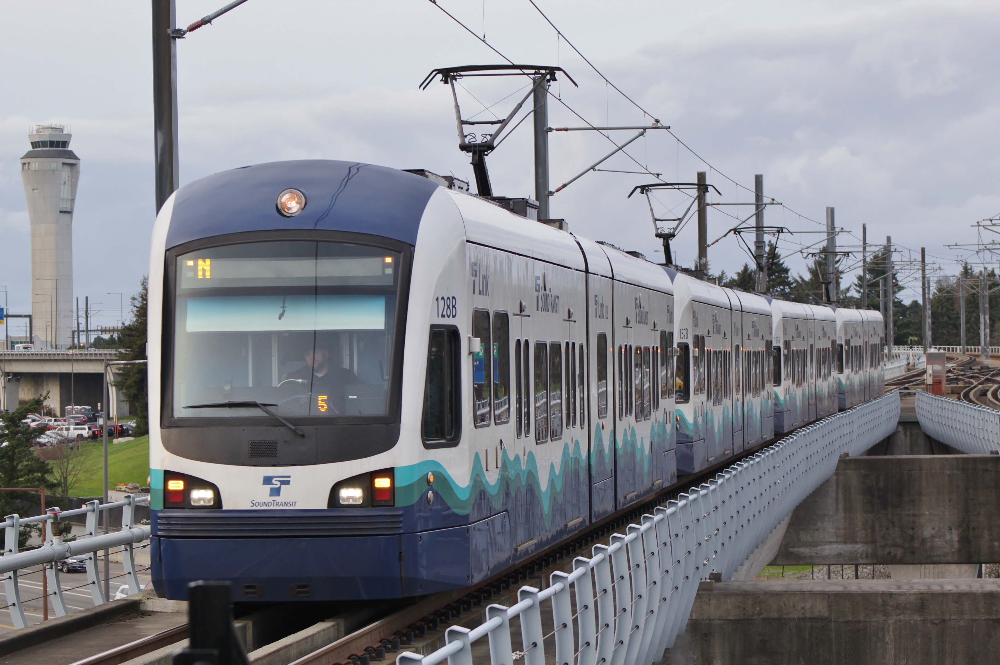

Is Seattle Walkable?
Seattle, at least by North American standard, is very walkable. A bus network covers pretty much the entire city and the One Line is a vital part of the city’s transportation network. Quite a few roads have separated bike lanes, though a city-wide bicycle network has yet to come to fruition. There’s also a pretty small tram network downtown, and I have seen a few downtown intersections with signal priority for buses. Of course, many cities in Europe would likely blow Seattle out of the water in terms of walkability. There is a lot to look forward to, however! In the case of the One Line, the city plans on expanding it quite extensively! To find out more, check out the third link.

Feel free to check out this link, too.